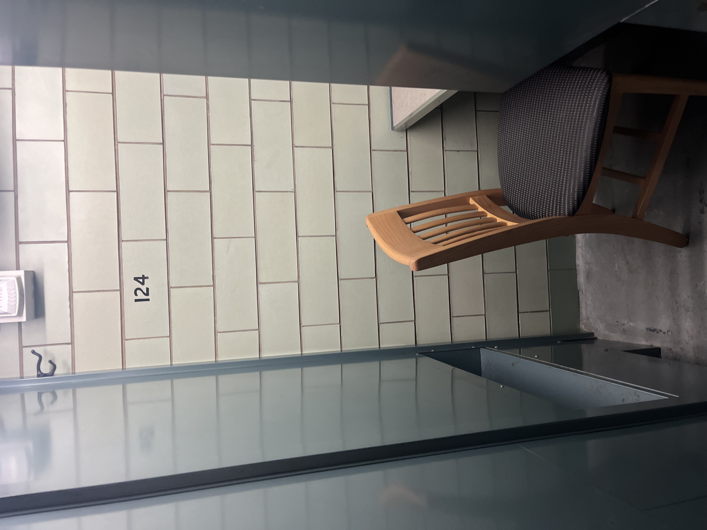
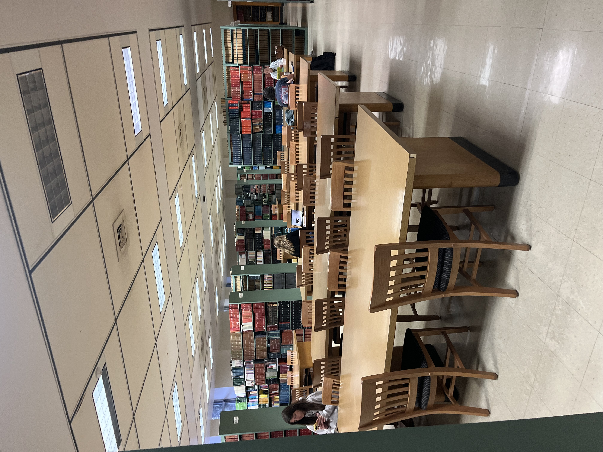

Memorial Library prioritizes quiet study spaces by reminding everyone while entering the area with a "Quiet Study" sign. Memorial Library is known for their unique single person study spaces often referred to as "the cages". This unique space offers a closed off and almost private study space that is silent. Most cages are just a small room with a fence-like door and a single person desk and chair. Some cages luckily even have a window to the outside, but most do not. These cages are best for working by yourself and needing a quiet space to get work done or take an exam.
Another unique feature is that Memorial Library offers reservable study rooms. This means you can reserve the room for yourself or you and your friends and have that room all to yourselves! These rooms are great to reserve for taking online exams, working on group projects together, or studying quietly by yourself. One thing to note is that the reservable study rooms are often booked out far into the future and it is very hard to reserve one during the craziness of mid-terms and finals.
Pictured to the left is a group quiet study area surrounded by bookcases. Memorial library also has a good amount of larger table spaces for studying around other students.
This space is great when meeting up with friends to study while still working independently. In my own experience, it can be very helpful and motivating to be around other studying students when trying to focus on school work or studying.
You can escape the extreme hectic nature of places such as Memorial Union by going to Memorial Library. This library provides and academic atmosphere and is only open to students. You must scan your Wis-Card to enter the Memorial Library.